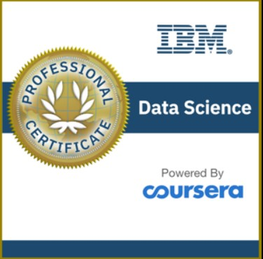

CERTIFICATIONS

AWS Certified Solutions Architect – Associate

Highly-motivated individual who desires to take on new challenges. Strong work ethics, adaptability and exceptional interpersonal skills. Adept at working effectively unsupervised and quickly mastering new skills.
My fascination with data began early in my career when I realized its power to uncover hidden patterns and drive meaningful decisions. I was captivated by how raw numbers could tell compelling stories, whether it was optimizing user interactions or predicting trends through analytics. This curiosity led me to dive deep into the world of data, where I transform complex datasets into intuitive, impactful insights that empower users and businesses alike.
Programming Languages: Python, Java, Javascript, C/C++
Data Science and Big Data technologies: Pandas, NumPy, Matplotlib, Hadoop, Apache Hive, Kafka, Spark
AI/ML Frameworks : TensorFlow, PyTorch, Scikit-learn, Keras
Miscellaneous Technologies/Tools: AWS, Azure, PowerBI, TeamDynamix, Service Now, Agile Methodologies
Leadership and Communication: Team Coordination, Project Management, Technical Documentation
University of South Dakota | 2024 - 2026
Data Mining, Distributed Systems, Computer Vision, AI/ML, Deep Learning
Visvesvaraya Technological University | 2017 - 2021
Data structures and Algorithms, Python Programming, Machine Learning, Operating Systems and Design, Cloud Computing
December 2024 - Present
Digital Accessibility Assistant
January 2022 - August 2024
Associate IT Consultant
August 2020 - February 2021
Technical Intern